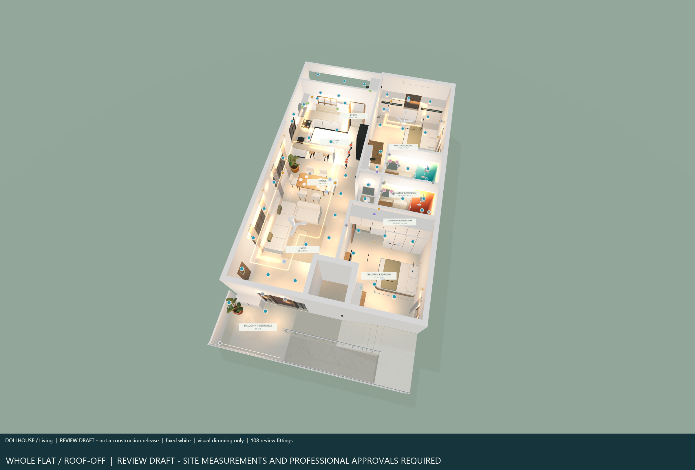
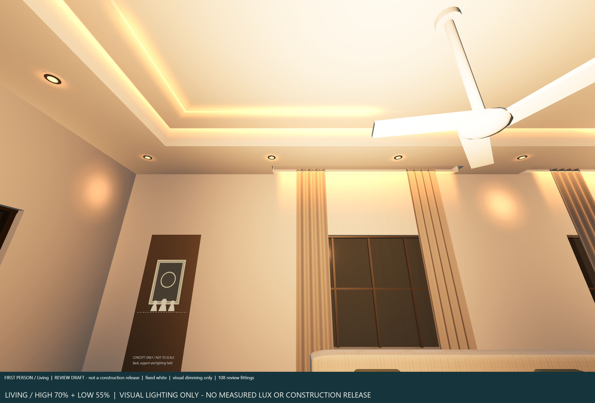
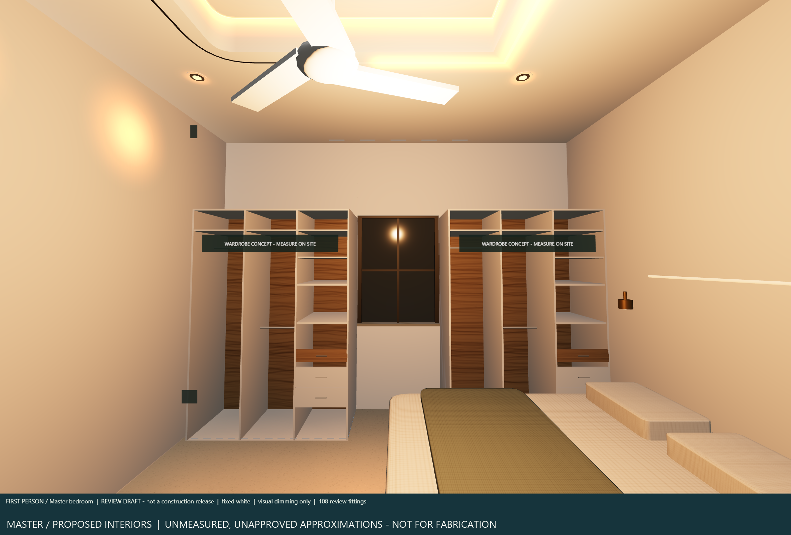

READY FOR COORDINATOR REVIEW - NOT FOR CONSTRUCTION. Renders illustrate the model and visual lighting only. Dimensions, cabinet interiors, electrical design, products and structural/site interfaces remain held. No measured or newly validated physical lighting simulation is claimed.
Open the offline Three.js viewer / Lighting planning workbench / Provisional interiors and joinery review.
Separate exploratory Radiance evidence addendum contains generic provisional ray-tracing estimates, not these illustrative renders or the viewer's frozen analytic maps. The six-room sensitivity revision is now included separately; no fixtures, viewer maps or holds changed.
These visual drawings and the civil pack share the b6f6bf1a source binding but preserve their producer-specific review receipts. Use this visual drawing issue with the civil site/structural checklist, not as measured setting-out or fabrication dimensions.



Original canonical master:
b6f6bf1a127c7e39086deb9fd1d2c0dff79a495381e1a4b9457f6a9a468f23ac.
Privacy-derived embedded plan:
33dd7317e805a9c9bc790c160dcfd6187c38fed9fffd97c13ba74b64267ed600.
Public viewer source and exact rebuild guide / Independent local byte-identical rebuild receipt / Render poses, settings and hashes / Producer desktop/mobile browser checks / Public drawing transformations / Integrated site copy receipt.
Three.js is bundled under MIT. Public source does not include the full private master. Raw private drawing and verification folders are excluded. The viewer withholds the older children's heatmap; inherited numeric grids are not validation of corrected geometry. Local review completion does not authorize publication, orders or site work.